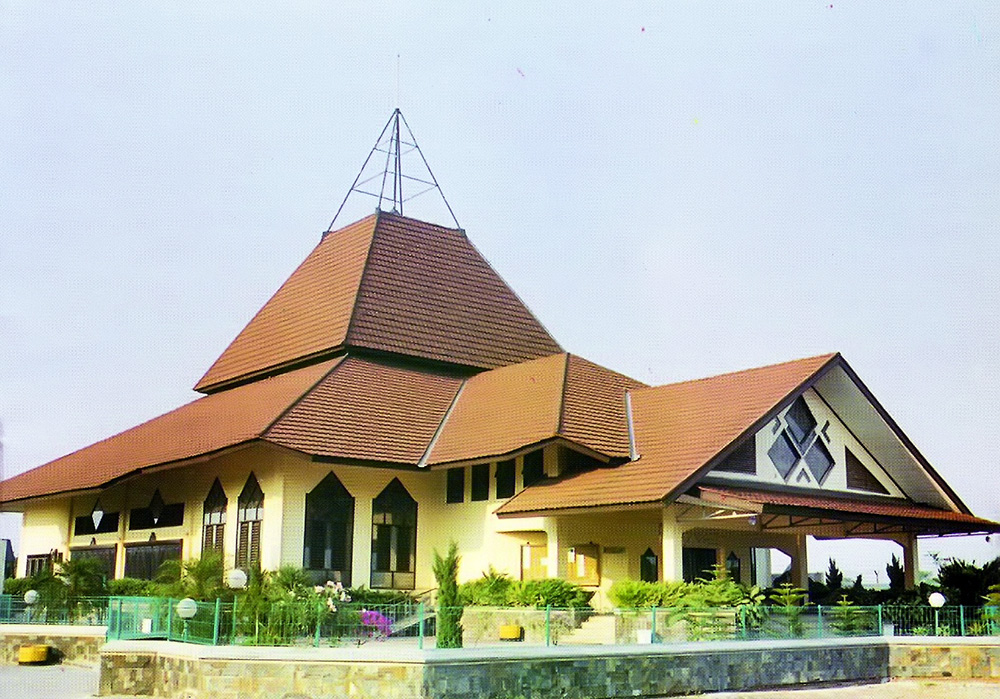
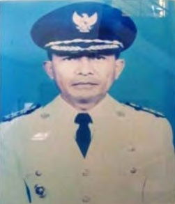
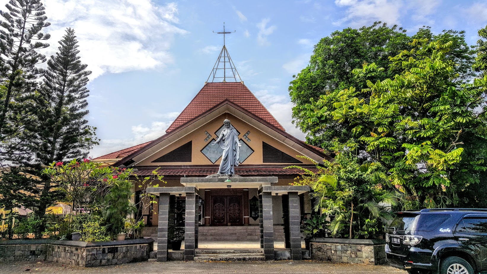

Sejarah Gereja Katolik Kristus Raja Karawang
Tahun 1962 menjadi awal pelayanan bagi umat Katolik di wilayah Karawang. Pelayanan ini dimulai dari Asrama TNI 324 Telukjambe. Pada tahun 1964, umat Katolik mulai menggunakan sebuah rumah di asrama tersebut sebagai tempat berkumpul dan berdoa bersama. Tempat ini kemudian dikenal sebagai Kapel St. Mikael Telukjambe.
Setelah beberapa waktu berpindah-pindah tempat pertemuan dari rumah ke rumah, pada tahun 1968 umat Katolik di Karawang akhirnya mendapatkan tempat yang lebih tetap untuk berkumpul. Sebuah gudang di Babakan Cianjur direnovasi dan dijadikan gereja sederhana sebagai tempat ibadah umat.

Sejak tahun 1969, umat di Karawang mulai mendapatkan pelayanan pastoral secara rutin dari J. Corstjens. Beliau merupakan Pastor Paroki Subang yang mendapat tugas untuk melayani umat di Karawang dan Purwakarta secara tetap. Berkat usaha dan perhatian beliau bersama umat, pada tahun 1974 Karawang resmi menjadi stasi dari Paroki Subang. Lima tahun kemudian, bangunan Gereja Katolik di Babakan Cianjur menjadi gereja permanen setelah mengalami beberapa kali pemugaran.
Pada tahun 1981, pelayanan pastoral dilanjutkan oleh Hardjosoebroto yang menggantikan Pastor Corstjens. Pastor Hardjo melakukan banyak penataan dan pembenahan kehidupan umat. Pada masa ini mulai dibentuk berbagai organisasi pastoral seperti Dewan Pastoral, PGAK, dan WK.
Pada tahun 1982, MGR. Arntz memberikan izin kepada Pastor Hardjo untuk membeli sebuah rumah di Jl. Sedap Malam No. 10 yang kemudian dijadikan pastoran. Pada tanggal 21 November 1982, rumah tersebut secara resmi ditetapkan sebagai pastoran sekaligus menjadi momen penting bagi perkembangan Gereja di Karawang. Pada saat itu pula Stasi Karawang resmi ditingkatkan menjadi Paroki, sehingga Pesta Kristus Raja Semesta Alam diperingati sebagai hari jadi Paroki Karawang.

Memasuki awal tahun 1990, Gereja menghadapi masa yang cukup berat. Sebagian masyarakat sekitar gereja menyatakan keberatan terhadap keberadaan tempat ibadah Katolik tersebut. Surat protes dilayangkan, dan pada masa Adven 1993 terjadi berbagai gangguan terhadap kegiatan gereja. Umat yang hendak menghadiri perayaan Ekaristi sering mengalami hambatan.
Karena situasi yang tidak memungkinkan untuk merayakan Ekaristi di tempat tersebut, setelah Pekan Suci tahun 1994 perayaan Ekaristi dipindahkan ke kompleks Sekolah Yos Sudarso, yang terletak di Jalan Belakang Pasar No. 14.
Periode 1990–1994 menjadi masa perjuangan yang berat bagi umat Gereja Katolik Kristus Raja Karawang. Masa ini diwarnai oleh berbagai kesulitan, termasuk perlakuan diskriminatif, penolakan dari sebagian masyarakat sekitar, serta perjuangan umat untuk mempertahankan hak beribadah secara layak.
Melalui perjalanan yang panjang dan dengan bantuan pemerintah pusat, pada tahun 1994 izin mendirikan bangunan gereja akhirnya dikeluarkan oleh Bupati Karawang saat itu, Sumarno Suradi, untuk pembangunan gereja di Babakan Sananga.

Melalui perjalanan yang panjang dan dengan bantuan pemerintah pusat, pada tahun 1994 izin mendirikan bangunan gereja akhirnya dikeluarkan oleh Bupati Karawang saat itu, Sumarno Sumardi, untuk pembangunan gereja di Babakan Sananga.
Pembangunan gereja terus berlangsung hingga akhirnya pada tanggal 23 November 1996, bertepatan dengan Pesta Kristus Raja, bangunan gereja yang baru diresmikan oleh Sekretaris Wilayah Daerah Kabupaten Karawang. Peresmian ini dihadiri oleh berbagai pejabat daerah tingkat II Kabupaten Karawang serta perwakilan dari Majelis Ulama Indonesia. Gereja ini kemudian diberkati oleh Alexander Djajasiswaja.
Perkembangan sarana paroki terus berlanjut. Pada Pesta Kristus Raja tahun 1998, Aula St. Agustinus dan Pastoran diberkati oleh Markus Priyo Kushardjono selaku Vikaris Jenderal Keuskupan Bandung. Dengan demikian, kompleks bangunan Paroki Kristus Raja Karawang semakin lengkap.

Sejak tahun 1998, perkembangan umat dan sarana pastoral terus bertambah. Hingga tahun 2013, paroki ini semakin memantapkan pelayanannya dengan berbagai fasilitas yang mendukung kehidupan umat, antara lain Gedung Gereja, Gazebo, Gedung St. Agustinus, Balai Pengobatan “Kurnia Asih”, kantin, serta area parkir yang lebih luas. Seluruh sarana ini hadir sebagai wujud pelayanan Gereja dalam mewartakan Injil dan menghadirkan karya keselamatan bagi masyarakat.